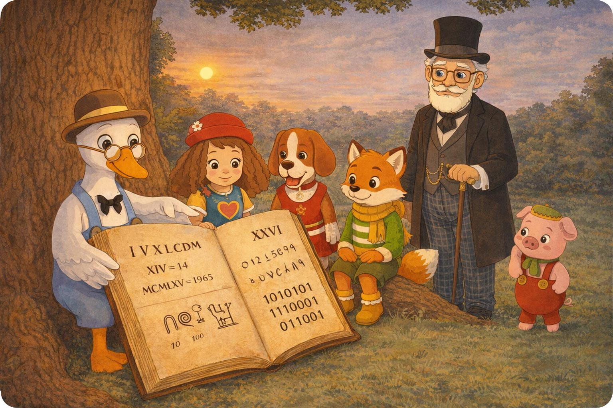
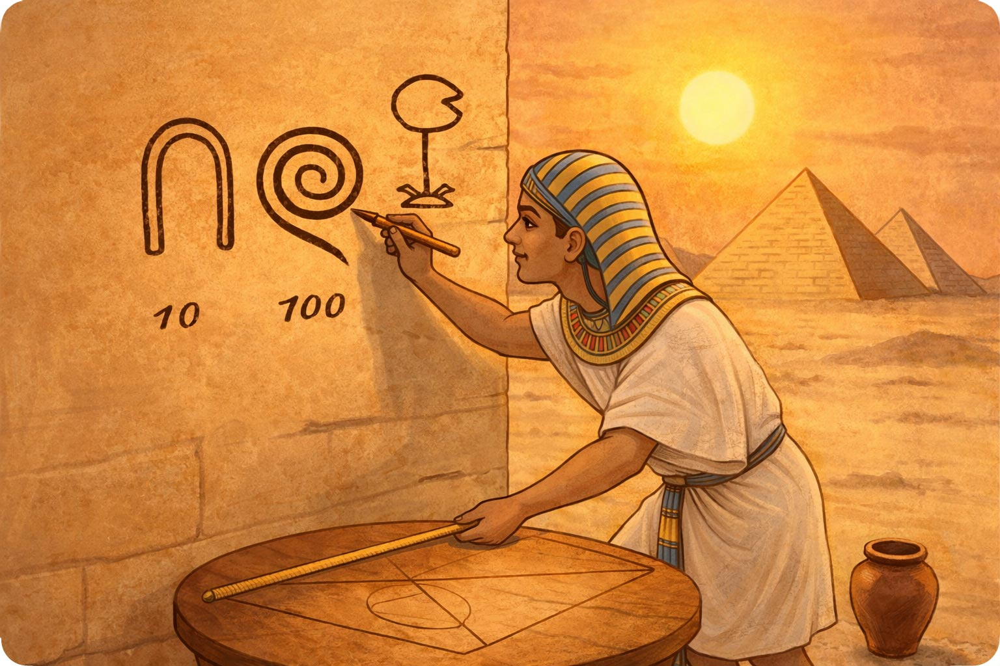
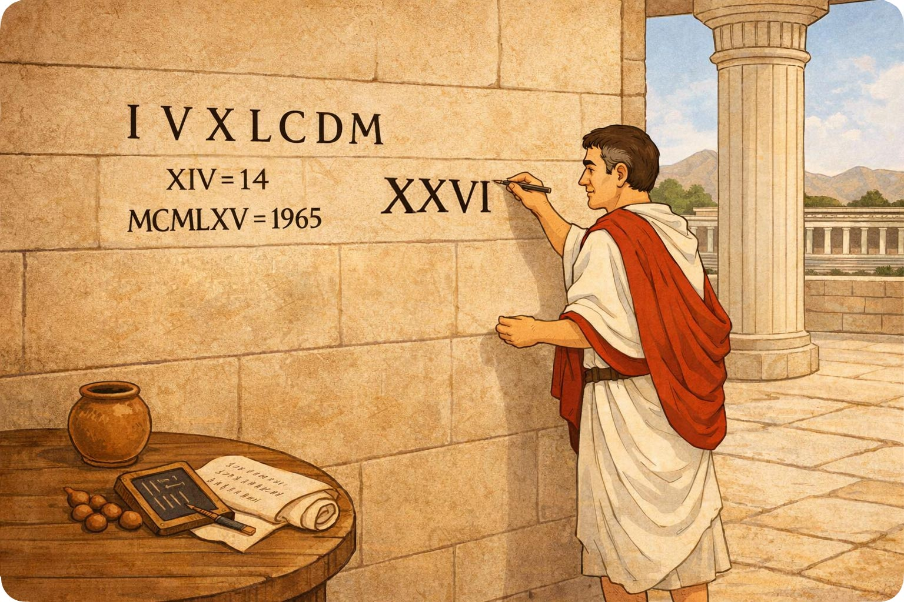
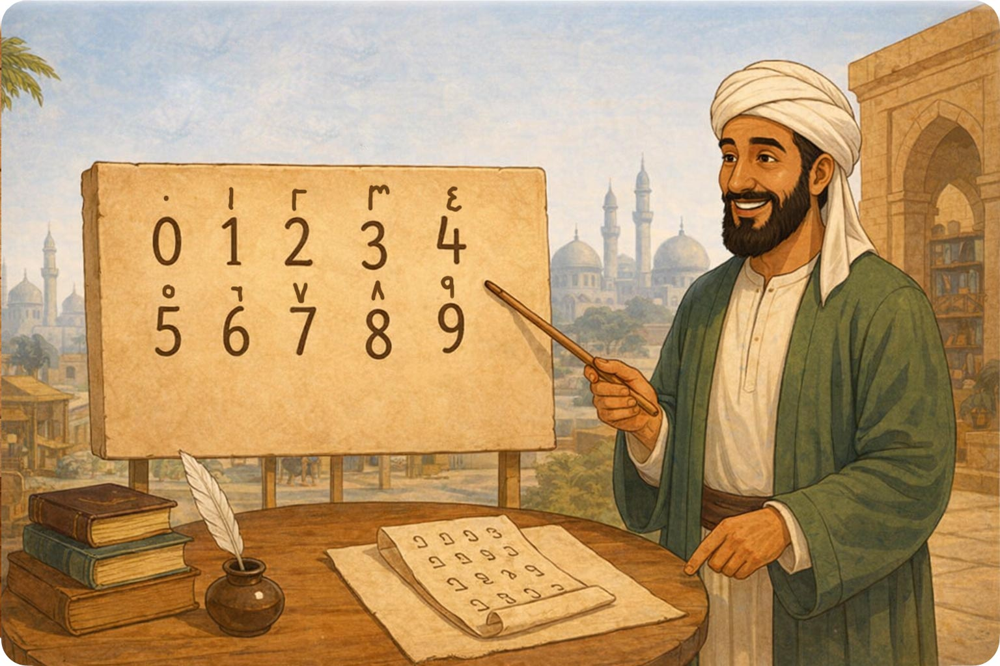
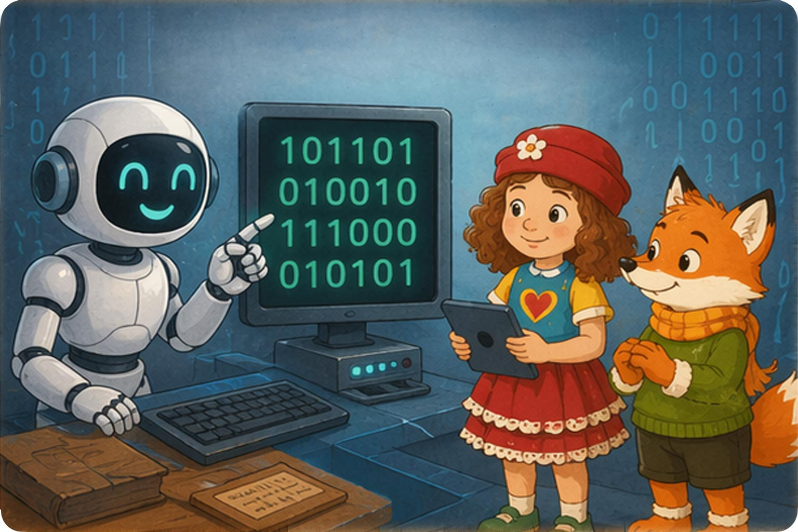

Вечером, когда солнце уже клонилось к закату, Настенька, Лиуми и Пиппа сидели у старого дуба.
Тихо зашуршала трава, и к ним подошёл гусёнок Филя — серьёзный и немного задумчивый. Под крылышком он держал толстую книгу.

— Вы говорили о числах, — сказал он, поправляя очки. — А знаете ли вы, как люди научились их записывать?
Пиппа удивлённо наклонила голову.
— Разве они не всегда выглядели так, как сейчас?
Филя тихо улыбнулся и аккуратно раскрыл свою книгу.
— Нет… когда-то давно числа выглядели совсем иначе. Люди рисовали их как маленькие картинки. Хотите отправиться в прошлое?
— Да! — воскликнули Настенька, Лиуми и Пиппа.
Филя перевернул страницу.
— Тогда начнём с древнего Египта…

На странице появились странные рисунки — палочки, завитки и другие знаки.
Филя объяснил:
— В Древнем Египте люди рисовали числа как картинки.
Василий Вольдемарович подошёл поближе и добавил:
— Например, простая палочка означала один, а завиток — сто.
Пиппа удивлённо ахнула:
— Как будто маленькие рисунки!
— Да, — кивнул Филя. — Каждый знак означал определённое число. Чем больше число — тем больше знаков приходилось рисовать.
Лиуми нахмурился:
— Значит, большие числа было трудно записывать?
— Очень трудно, — подтвердил Филя.
Филя перевернул следующую страницу.
На ней появились знакомые буквы:

— Потом появились римляне, — сказал он. — Они записывали числа буквами.
Лиуми удивился:
— Буквами?!
Настенька оживилась:
— Я видела такие числа! Например, XIV — это четырнадцать.
— Верно, — кивнул Филя. — Это было удобнее, чем рисовать много картинок, но всё равно довольно сложно.
Пиппа задумалась:
— Значит, люди всё время искали способ писать числа проще?
— Именно так, — сказал Филя.
Филя перевернул ещё одну страницу.
На ней появились знакомые цифры:
Василий Вольдемарович внимательно посмотрел на рисунок и сказал:
— Эти цифры называются арабскими цифрами. Именно ими мы пользуемся сегодня.

Пиппа указала на маленький кружок.
— А что это за кружочек?
Василий Вольдемарович улыбнулся:
— Это ноль. Самый важный знак среди цифр.
Лиуми удивился:
— Самый важный? Но он же ничего не обозначает!
— Наоборот, — мягко сказал дедушка. — Ноль показывает, что на этом месте ничего нет. Без него мы не могли бы записывать большие числа.
Пиппа задумалась:
— Значит, даже пустое место может быть важным…
— Очень важным, — подтвердил Филя.
Филя перевернул последнюю страницу.
На ней появился маленький экран.
На экране было написано:

Лиуми прищурился:
— Это тоже число?
Филя кивнул:
— Сегодня компьютеры тоже считают. Но они знают только две цифры.
— Какие? — спросила Пиппа.
Филя улыбнулся:
— Ноль… и единицу.
Настенька удивилась:
— Всего две цифры?
— Да, — сказал Василий Вольдемарович. — Но из них можно составить любые числа, даже самые большие.
Пиппа посмотрела на экран и тихо сказала:
— Значит… числа могут выглядеть по-разному… но всё равно остаются числами?
Филя аккуратно закрыл свою книгу.
— Именно так, — сказал он. — Люди меняли способы записи чисел, но сами числа всегда оставались теми же.
Над старым дубом медленно опускался вечер, а в книге Фили ещё оставалось много страниц с удивительными историями.
— Древний Египет — рисунки иероглифов
— Древний Рим — буквенная запись: I V X L C
— Современный мир — арабские числа — десятичная система
— Компьютеры — двоичная система 0 и 1